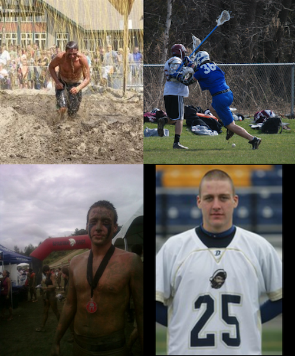

That rock is rotating around its axis at ~1000 miles per hour to give us 24 hours in a single day!

I grew up in a small town on the shoreline of Connecticut
After playing sports, graduating, and meeting some of the best friends of my life, I shipped out to Massachusetts Maritime Academy.
The regimented lifestyle was different but I learned invaluable life lessons, sailed around South America, and played collegiate lacrosse.

Fast-forward a bit, I ended up transferring back to Connecticut to go to UConn.
I applied 3 times to get into UConn Storrs, then 3 more times to the Computer Science & Engineering program.
After grinding out rigirous academic pre-reqs, the battle of actually getting into the School of Engineering seceded!
Fast forward countless trials and tribulations... My closest friends and I ended up winning UConn Senior design with Hydra (an unfunded, muscle & android controlled, 3D printed prosthetic arm)
and I successfully graduated college with a B.S. in Computer Science and Engineering.

Shortly after graduating I moved down to North Carolina for my first job. There I met some incredible people, explored the blue mountains, and the ever familiar East coast shoreline.

Following my experience in North Carolina, I ended up back in New England working as a Software Engineer. Breathing in all the Javascripts, Node especially, but also engaging in Python and PHP projects!
New oportunities induced and I was able to turn my IoT hobbies and interests into reality! I explored east to Cape Cod to a much smaller company where any given day I could be writing swift, objective C, or even some C++.

A lot of weird nondeterministic events occured for me to end up where I am today, but I couldn't be happier and can't wait to continue pushing myself.

I'm currently working for a truly amazing tight knit startup in Boston, developing quality apps at expeditious velocities.